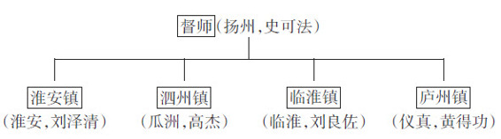

谈明之亡，不能不谈其武力；谈其武力，又不能不谈江北四镇。
甲申年五月十五日，朱由崧甫由监国即皇帝位，史可法等即以“设四藩”奏闻。这是对前一日召对的复命。它制订了有关江北的一揽子军事部署，主要内容是：以督师一员，驻于扬州，居中调度。下设四镇，以刘泽清、高杰、刘良佐和黄得功分驻淮安、泗州、临淮（凤阳）、庐州（合肥）。四镇的任务，近期在防务，远期为“恢复”。淮安镇未来沿山东方向恢复，泗州镇未来沿开封、归德方向恢复；临淮镇未来沿陈州、杞县方向恢复；庐州镇未来沿光州、固始方向恢复。
到最后实施时，出现以下一些变化：原拟以马士英为督师，但马采取准军事政变手法，带兵赴南京，如愿以偿地成为内阁首辅留在南京，而把史可法挤到扬州当督师。高杰不肯去泗州，猛攻扬州，志在必得，朝廷屈服其压力，把他驻地改为距扬州仅三十余里的瓜洲，使扬州危机化解。高杰改瓜洲后，为了有所抑制，史可法又把黄得功从庐州移到仪真（仪征）。所以，最终江北军事体系是这样的：

后人多因四镇体系没发挥任何作用，而指其是“豆腐渣工程”。这样看问题，有失客观。就构想和方案上而言，四镇之设层次井然，进退可据，有呼有应，加上长江中游左良玉部，从北而西是一个流畅完整的扇形，辐射面涵盖鲁、豫、陕、鄂、川，且兼顾了近期稳守、远期进取两种需要，颇富逻辑性。我们看崇祯以来内忧外患、战火连绵的明末，军事上还没有过这样带体系性的设计，如能不打折扣地付诸实施，其结果纵不估计过高，至少不至于不堪一击。后人所以觉得是“豆腐渣工程”，是用乙酉年四、五月间的一溃千里，倒过来断言它有如聋子的耳朵——摆设。然而，世间事物因果关系并非线性，事之成败，取决于多方面；尤其变化着的过程，常常起到意想不到的作用。所以结果不好，不一定代表最初的安排与设计不好。